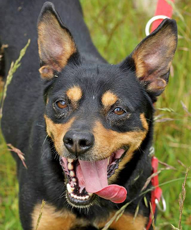
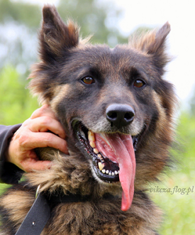
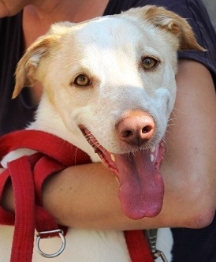

Świat byłby lepszym miejscem, gdyby każdy miał możliwość kochania tak bezwarunkowo jak pies.
MK Clinton
Psiaki nowo przyjęte

Drago
Majac 11 lat Drago jest nadal żywiołowy, aktywny i energiczny.
Donośnym szczekaniem domaga się uwagi. Z pewnością będzie wspaniałym towarzyszem podczas spacerów i
kompanem do wspólnej zabawy.

Fliper
Ma około 8 lat. To miły, spokojny, otwarty psiak, przyjacielski dla ludzi, łatwo nawiązujący dobry kontakt z opiekunami i wolontariuszami.

Lucky
Psiak jest młody, wesoły, aktywny, przyjacielski i przekochany wobec znanych sobie osób. Jest bardzo energiczny, ale jednocześnie karny,
chętny by uczyć się i podporządkowywać opiekunom.